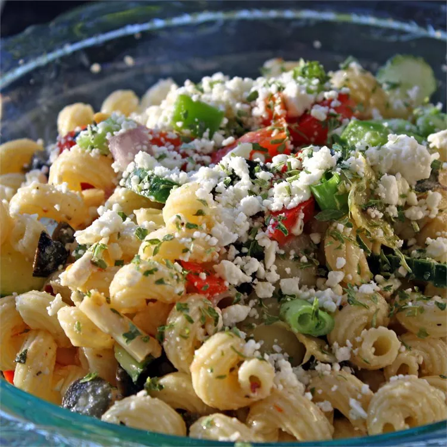

Greek Pasta Salad

Description
This Greek pasta salad with cucumbers, cherry tomatoes, bell peppers, red onion, and feta makes a refreshing summer pasta dish.
Ingredients
- 2 cups penne pasta
- 2/3 cup extra-virgin olive oil
- 1/4 cup red wine vinegar
- 2 cloves garlic, crushed
- 1 tablespoon lemon juice
- 2 teaspoons dried oregano
- salt and pepper
- 10 cherry tomatoes, halved
- 1 green bell pepper, chopped
- 1 red bell pepper, chopped
- 1 small red onion, chopped
- 1/2 cucumber, sliced
- 1/4 cup sliced black olives
- 1/2 cup crumbled feta cheese
Steps
- Fill a large pot with lightly salted water and bring to a rolling boil. Stir in penne and return to a boil. Cook pasta uncovered, stirring occasionally, until tender yet firm to the bite, about 10 minutes; rinse with cold water and drain well.
- Whisk olive oil, vinegar, garlic, lemon juice, oregano, salt, and pepper together in a bowl; set aside.
- Combine pasta, tomatoes, green and red peppers, onion, cucumber, olives, and feta cheese in a large bowl. Pour vinaigrette over the pasta mixture and mix well. Cover and chill for 3 hours before serving.